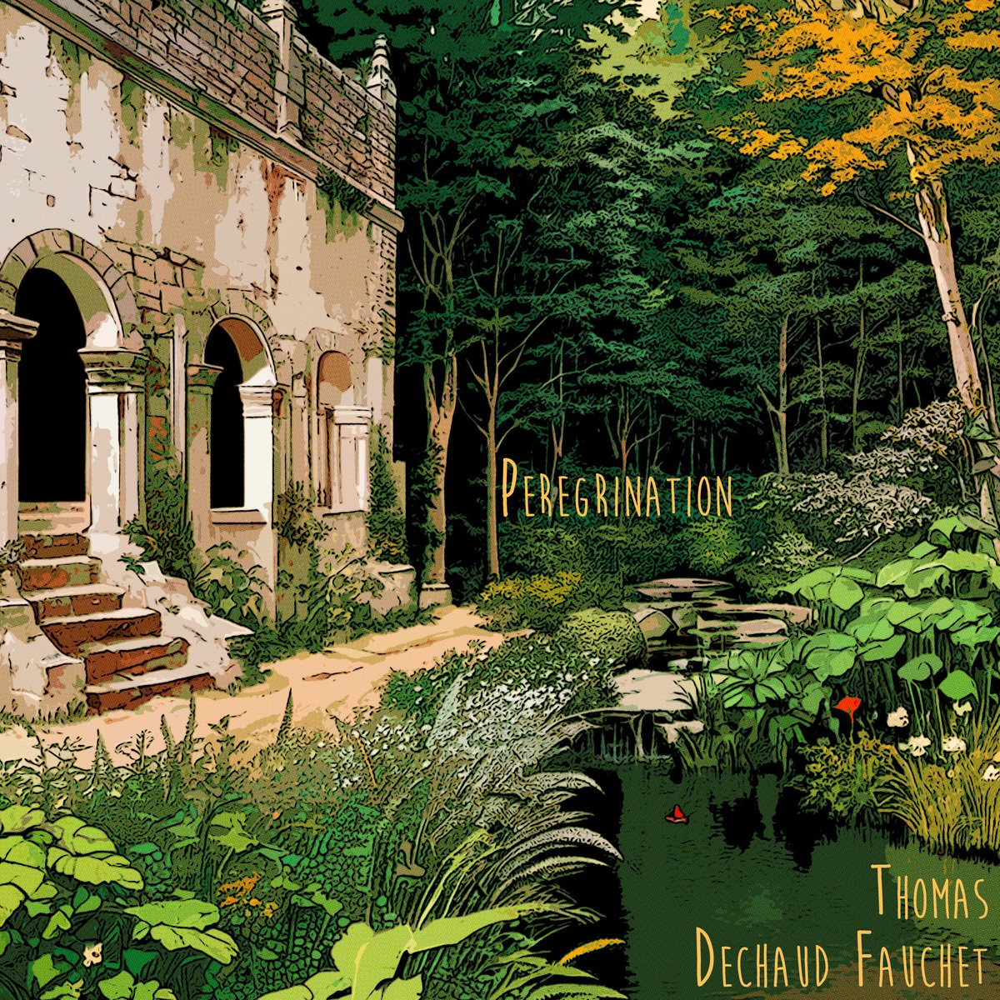
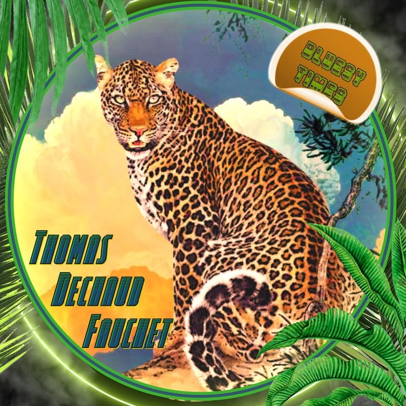
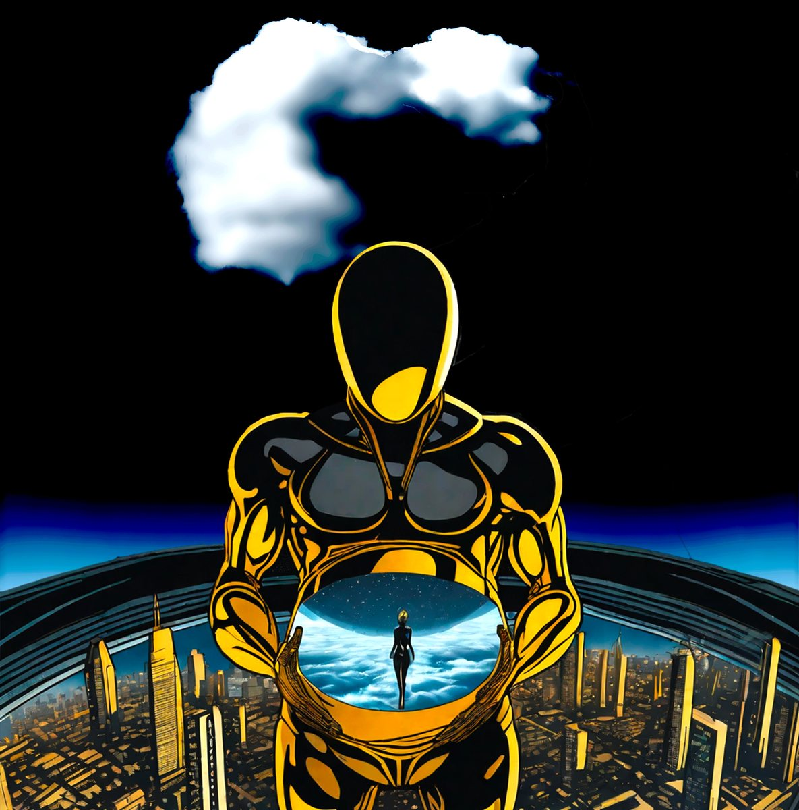
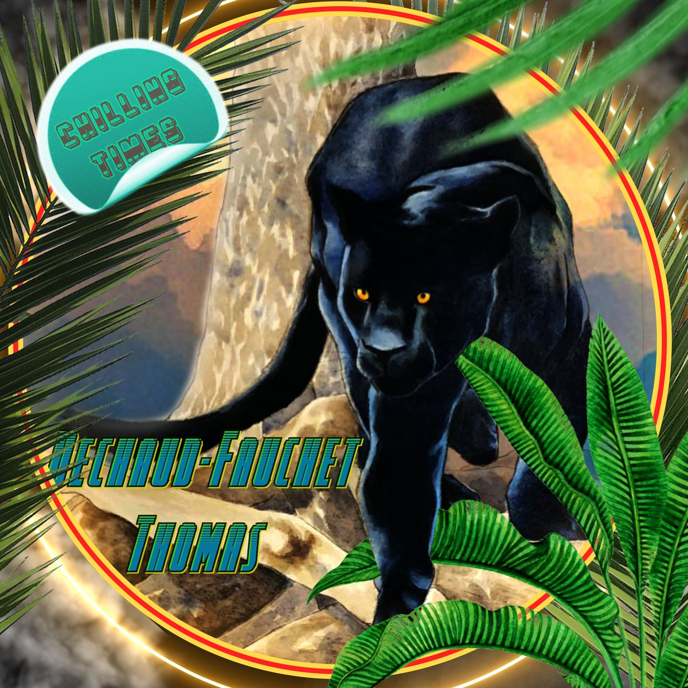
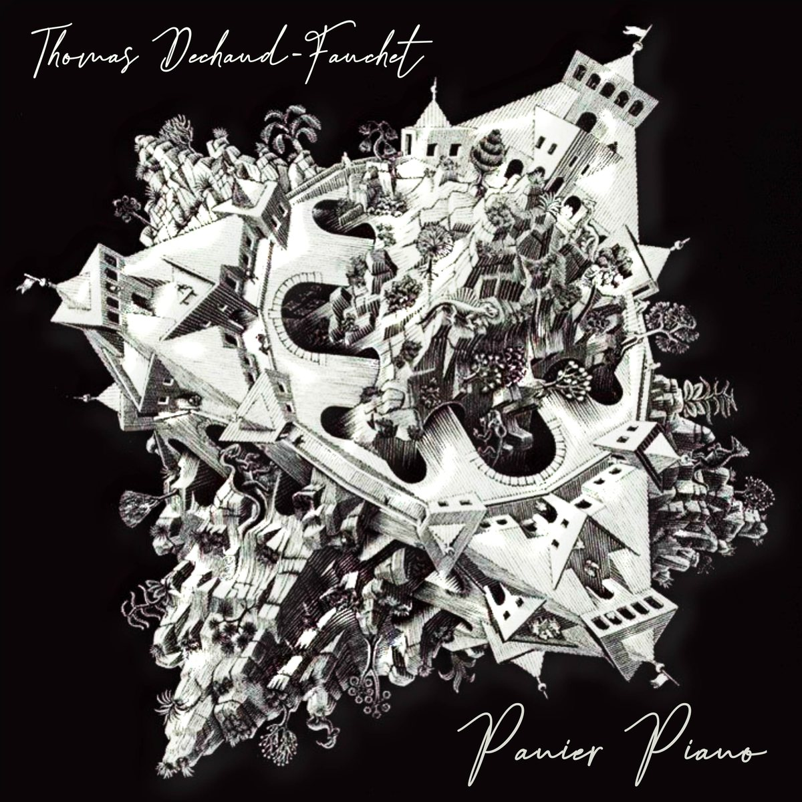

Peregrination
album · 2024 · 7 titres
Titres
- Cancun
- Baracoa
- Bermudes
- Aruba
- Tarrafal
- Pompano Beach
- Couva
2022–2024 · six sorties sous mon nom
[À CONFIRMER : années (déduites des dates des masters) et types : iMusician indique Iaoïde en EP et Bluesy Times en single]

album · 2024 · 7 titres

EP · 2023 · 3 titres

album · 2023 · 6 titres

EP · 2023 · 6 titres
EP · 2022 · 5 titres

album · 2022 · 12 titres
[À COMPLÉTER : quelques mots sur chaque sortie, celles à mettre en avant]